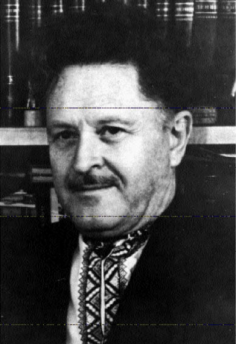
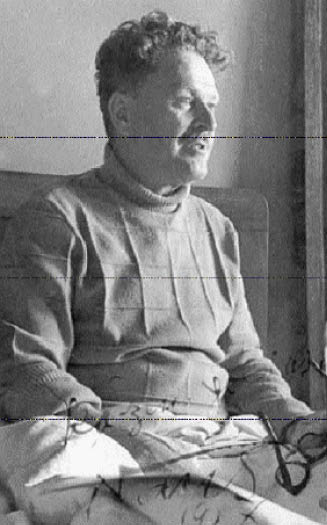
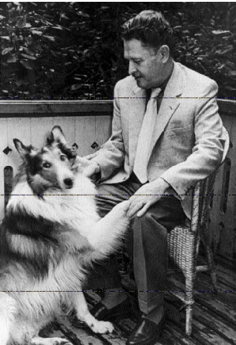

BİREYSELDEN TOPLUMSALA,ULUSALDAN EVRENSELE
Nâzım Hikmet sanatı ile eserinin niteliğini ve evrimini bir konuşmasında temel çizgileriyle belirtmiştir. Şiir anlayışı ile onun gelişimini, tasarladığı ile gerçekleştirdiğini, kendi deyişiyle “ne yapmayı isteyip de ne yapabildiğini” de açıklayan bu önemli konuşmayı şairin arkadaşı Ekber Babayef derleyip düzenlemiştir.”149
Bundan önceki bölümde Nâzım Hikmet’in “eseri” (ve dolayısıyla şiiri, sanat görüşü) üzerinde uzun uzadıya durmuştum. İncelememin sonunda bir ‘özetleme’ ya da ‘genelleme’ çıkartmaktansa, sözü geçen konuşmayı –gerekli açıklama ve eklemelerle– Yön dergisinden150 aktarmayı yararlı buldum:

NÂZIM HİKMET KENDİ ŞİİRİNİ ANLATIYOR
Ekber Babayef
Nâzım Hikmet’in odası. Duvarda Abidin Dino’nun “Yürüyüş” tablosu, İstanbul’un renkli fotoğrafı, Avni’nin “Atlar”ı, Bulgar Piyonerlerinin hediyesi: nakışlı, dokuma bir halı, halıda Nâzım’ın çok güzel çok büyük ve kendisine en çok benzeyen bir portresi.
Nâzım’ın masasında, Nâzım’ın yazı makinesinde, Nâzım kitabı için bir Önsöz yazıyorum, Nâzım’ın bana hediye ettiği kalemle tashihler yapıyorum.
Nâzım, büyük Rus şairi Puşkin için şöyle yazdıydı: “Puşkin’i sinemada, tiyatroda seyrettim, Puşkin üstüne yazılmış kitaplar, biyografiler okudum ve her seferinde yüreğim ağzıma geldi, aman kendini öldürtecek diye ve her seferinde dehşetli bir keder duydum, Puşkin öldü diye.”
Nâzım’la 13 sene çok yakın arkadaşlık ettim. Yazdığı şiirlerin hemen hepsini kendi dilinden dinledim. Moskova’da yazılan şiirlerin ilk okuyucusu oldum. 1951’in 29 Haziranında onu Moskova’nın “Vnukovo” uçak alanında karşıladım ve 1963’ün Haziranında Moskova’nın “Novodeviçye” mezarlığında onunla vedalaştım.
Şimdi şu Önsözü yazarken, o 13 sene gözümün önünde canlanıyor. Ve 3 Haziran 1963’e her yaklaşışımda yüreğim ağzıma geliyor: Aman Nâzım gidecek ve dehşetli bir keder duyuyorum. “Bu dünyadan Nâzım geçti”. (Nâzım Hikmet’in çocukluk ve gençlik arkadaşı Vâlâ Nureddin, Nâzım için yazdığı kitaba şu güzel başlığı koymuştur: “Bu Dünyadan Nâzım Geçti”)
Nâzım Hikmet üstüne epey yazı çıktı, yine çıkacak. Onun sanatı üstüne eleştirmeler yayımlandı, yine yayımlanacak. Fakat bunların hepsinden çok daha önemli bir şey var: Nâzım’ın kendi diliyle kendi sanatını anlatışı.
Nâzım kendi sanatı üstüne konuşmasını sevmezdi. Kitapları için Önsöz, ona biz zorla yazdırırdık. Bir keresinde de tuttu şöyle bir önsöz yazdı:
***
“Çocukluğumda, imlâda çıkan yanlışların doğrularını en aşağı yirmi beş kere yazdırtıp beni cezaya çarparlardı. Şimdi, çarpıldığım en ağır ceza, basılan kitaplarıma önsöz yazmak. Kitap ortada, okuyucunun da aklına fikrine güveniyorum. Zaten güvenmesem, kitabımı okusun diye önüne sürmezdim. Öyleyse önsöze, hele benim yazacağım önsöze ne lüzum var? Ben sanatı şöyle anlarım, böyle anlarım demekteki mânâ ne? Sanat görüşüm, bu görüşün nasıl değiştiği, ne gibi değişmeler geçirdiği, hele böyle bir ‘Seçme Yazılar’ kitabımı okuyan için belli olmuyorsa, ne yapsam faydasız. Benim önsözüm de, kitabı düzenleyenin önsözü de faydasız. Ama işte, bütün bu söylediklerime bakmaksızın, önsözü yine de yazıyorum. Dudaklarımı kemiriyorum, alnımı kırıştırıyorum, kalkıp kalkıp oturuyorum, ama yazıyorum. Neden? Niçin? Çünkü ne yapmak istemişim de, ne yapabilmişim; hasretim neymiş de, bunun ne kadarını gerçekleştirebilmişim, belli olsun istiyorum. Yani ben sanat görüşümü, ne yapmak istediğimi, hasretimi okuyucuya söyleyeceğim. O, bakacak, yaptıklarımı, yapabildiklerimi okuyacak, ölçecek. Ayrılık varsa görecek. Elbette var. Hasretimiz gerçekleştirebildiğimizden çok ilerde, çok büyük. Ayrılık var, ama aykırılık, zıtlık yok. Ben sanat görüşüme aykırı tek satır yazmadım, yazmamaya çalıştım.”
***
Sonra birkaç kere daha bu önsözlerden yazdı Nâzım. Fakat benim asıl istediğim şeyi –kendi sanatını anlatan yazıyı– bir türlü yazmıyordu yahut yazmak istemiyordu. Hep aynı sebep, anlaşılan.
Bir gün İtalya’dan, Nâzım’ın eserlerini basan bir yayınevinden mektup geldi. Yayınevi sahibi, Nâzım’ın bütün eserlerini, şimdiye kadar ne yazmışsa, kaç cilt olursa olsun, basmak niyetinde olduğunu yazıyor ve Nâzım’dan sanat anlayışı üstüne bir de yazı istiyordu. Şunu da söyleyeyim ki, bu yayınevi, Nâzım’ın eserlerini en iyi basan bir yayıneviydi ve hatta bir keresinde “Memleketimden İnsan Manzaraları”nın üçüncü kitabının bir sayfa Türkçe, bir sayfa İtalyanca olarak basmıştı. Nâzım’ın bu yayınevine saygısı büyüktü ve yapılan teklifi sevinçle kabul etti.
Eserlerini toplamaya başladık fakat iş yarıda kaldı. Nâzım Tanganika’ya gitti, dönüşte Berlin’e, sonra, az sonra... 3 Haziran 1963.
Tanganika’ya gitmeden biz şöyle kararlaştırdık: Ben, Nâzım’ın başka başka zamanlarda yazdığı ve bende olan yazılarından bir “montaj” yapacağım, Nâzım dönüşte onları gözden geçirecek, gereken yerlerini işleyecek ve yazıların arasına” köprüler” kuracak.
Ben “montaj”ı yaptım, Nâzım’a gösterdim, beğendi, “köprüler”den konuştuk, iki gün sonra bu köprüler kurulacaktı.
Aşağıdaki yazı işte o “montaj”dır. Maalesef, köprülersiz. Köprüleri ben kurmaya çalıştım: Nâzım’ın yapmak istediklerini hatırlayarak.
İmlâ Nâzım’ın imlâsıdır, değiştirmedim.
***
“YAHYA KEMAL ANAMA SEVDALIYDI SANIRSAM”
Niçin şiir yazıyorum? Bunu başka türlü sormak daha doğru: Şiir yazmaya neden, nasıl başladım?
Hatırlamaya çalışayım.
13 yaşlarındaydım. İstanbul’daydık. Büyükbabam şairdi, ama şiirlerini hâlâ anlamam. Dilini, Osmanlıca dediğimiz, yüzde yetmiş beşi Arapça, Farsça sözlerle ve Arap, Fars gramer kaidelerine uygun bir Türkçeyle yazardı. Bunlar didaktik, dogmatik, dinî şiirlerdi. Anlamıyordum onları. Ama ben şair bir büyükbabanın torunuydum. Anam Lamartin’e bayılırdı. Fransızca okurdu. Bir kere, o zamanlar Lamartin Türkçeye çevrilmiş, birkaç şiir de Osmanlıcaydı, anam Fransızcayı çok iyi bilirdi, ama Osmanlıcayı bilmezdi. Benim gibi.
Büyükbabam, mevlevî Nâzım Paşa şairdir, anam Lamartin’e bayılırdı. Evimizde, babamın edebiyatla ilgisizliğine bakmaksızın, şiir baş köşedeydi.
Karşımızdaki evde yangın çıktı. Yangını ilk görüşüm. Şaştım, korktum. Büyükbabam, yangın bize atlamasın diye pencereden Kur’an’ı tuttu karşıdaki alevlere. Yangın söndü. Kur’an gücüyle, hatta itfaiye gücüyle de değil, ama yaktığı evi kül ederek söndü kendiliğinden ve ben bir saat sonra ilk şiirimi yazdım: “Yangın” Vezni, büyükbabamın yüksek sesle okuduğu aruzla yazılmış şiirlerinden kulağımda kalan ses taklitleriyle yapılmıştı. Yani ne aruzdu, ne heceydi, serbest vezindense haberim yoktu, uydurmaydı. Dili de öyle, Osmanlıca taklidiydi. Konusuysa şu:
Yanıyor yanıyor
Medhiş terrakeler
Çekiyor aguşuna bu advi beşer
Haneler, fakirler, yetimler...”3
Şimdi bunları yazarken bir şeyin farkına vardım. Büyük babamdan çok Edebiyat-ı Cedide’nin, Fikret’in meselâ etkisindeymişim. Neden? Bilmiyorum. Belki de hiç şiir sevmeyen, ama Tevfik Fikret’i –o da bir çeşit Osmanlıcayla yazardı– iki kere yüksek sesle yanımda okuyan babamın yüzünden mi? Belki de.
İkinci şiirimi 14 yaşımda yazdım sanırsam. Birinci Dünya Savaşı içindeydik. Dayım Çanakkale’de şehit olmuştu. Dehşetli yurtseverdim. Savaş için bir şiir yazdım. Ne tuhaf, yazdığımı çok iyi biliyorum da, hatta artık Osmanlıcayla değil, okulda okuduğumuz şair Mehmet Emin’in takır tukur ama Arapçası, Farsçası az Türkçesiyle yazdığımı biliyorum da tek satırı aklımda değil.4
Sonra üçüncü şiirimi galiba 16 yaşımda yazdım. Büyük bir Türk şairi, Türk şiirini ve o devir için yeni bir şiir dili ve anlayışı getiren Yahya Kemal anama sevdalıydı sanırsam. Evde şiirlerini okurdu anama. Bahriye mektebinde tarih öğretmenimdi şair. Kız kardeşimin kedisi üstüneydi yazdığım şey. Yahya Kemal gösterdiğim kediyi de görmek istedi ve şiirimde anlattığım kediyi gördüğü kediye o kadar benzetmedi ki, bana, “Sen bu pis uyuz kediyi böyle övmesini biliyorsun, şair olacaksın”dedi.5
17 yaşımda galiba ilk şiirim basıldı. Yani “Serviliklerde”, yani mezarlıklarda ağlayan hayatında sevmiş ölüler üstüneydi. Yahya Kemal düzeltmişti birçok yerini.6
Sonra kızlara tutuldum, şiir yazdım. Sonra Antant İstanbul’u işgal etti, onlara karşı ve Anadolu savaşını tutan şiirler yazdım. Vicdan nedir, namus nedir filân diye düşündüm, şiir yazdım. Ama artık dilim temizceydi ve hece vezniyle ve doğru dürüst kafiyelerle yazmasını öğrenmiştim.
Anadolu’ya geçtim. Millet sıska atları, Nuh’tan kalma silâhı, açlığı ve bitiyle savaşıyordu Yunan ordularına karşı. Milleti ve savaşını keşfettim. Şaştım, korktum, sevdim, bayıldım ve bütün bunları başka türlü yazmak gerektiğini sezdim, ama yazmadım. Daha büyük bir sarsıntı gerekti... (Ve o gün bugündür şiir yazmadan edemiyorum.)
FÜTÜRİST RESİM KONSTRÜKTİVİST Mİ?
Anadolu’ya, işgal altındaki İstanbul’dan, geçişimde ve bilhassa Bolu’ya gelip halkla, hele köylüyle yakından temasımda ve Sovyet Rusya’da olup bitenleri kulaktan duyup, Marks’ın Lenin’in isimlerini filân da işitişimde, şiirle yeni şeylerin, şimdiye dek söylenmiş şeylerin ifade edilmesi gerektiğini sezdim. Bu işte ilk önce beni yeni öze göre yeni bir şekil bulmak meselesi ilgilendirdi. Şekilde yenilikler daha kolaylıkla yapılır genel olarak. İşe kafiyeden başladım. Kafiyeleri mısraların sonunda değil de bir sonda, bir başta denedim. Misâl:
Yıldızlarla ufka sarkan beyaz, dümdüz bir gece
Saatlerce nasıl koşmak arzusunu verirse..
Bolu’dan Trabzon’a geldiğimde, Sovyet Rusya’ya geçmek maksadıyla, öz şekilden daha çok ilgilendiriyordu beni. Fakat bu özü, yani inkılâpçı saydığım bu özü, genel sembollerle vermeye çalıştım. Misal:
Mısır’ın yanık kızıl çöllerindeki ehram,
Bugün seni gönlünün diliyle seven adam
Belki yiğit yürekli, belki de bir delidir,
Fakat seni mutlaka yıkmağa yeminlidir...
Batum’a geldim. Sovyet realitesiyle temas ettim. Bir yandan “Kızıl Ordu” şiirini yazdım, öbür yandan tekrar şekil meseleleri beni uğraştırdı. On dört ve yedi hecelerle, “Mukaddes Kitap”ı yazdım. Böyle denemeler benden önce de yapılmıştı, fakat ben kendi şiirimde bunu ilk önce deniyordum.
“Pravda” gazetesinde, yahut “İzvestiya”da, şimdi hatırlamıyorum ve herhalde Mayakovski’nin olacak bir şiirini gördüm, uzun kısa mısraların şekli beni çok ilgilendirdi. Fakat şiiri tercüme ettirip neden bahsettiğini anlamak mümkün olmadı. Batum’dan Moskova’ya geçişte açlık mıntıkasından geçtik. Gördüklerim üzerimde çok tesir etti. Fakat böyle bir açılığın dahi inkılâbı yıkamayacağını haykırmak istedim. Moskova’da hece vezniyle ve bu veznin çeşitli hece kombinezonlarıyla açlığa dair bir şiir yazmak istedim olmadı. O zaman Batum’daki şiirin şekli geldi gözümün önüne. Bunun çok iyi tanıdığım Fransız serbest vezni olmayacağına, her nedense kanaat getirdim, bunun yepyeni birşey olduğuna ve şairin böyle dalgalar halinde düşündüğüne hükmettim ve “Açların Gözbebekleri”ni yazdım:
Kimi
kemik
dizlerine vurarak
yuvarlak
bir karın
taşıyor!
Kimi
deri... deri!
Yalnız
yaşıyor
gözleri!
Bu tarzda kafiyenin büyük rol oynadığını sanıyordum o zamanlar ve kafiyeye hâkim olmak için temrinler yapmaya başladım. Misal:
Yağmur yağ,
yağ yağmur yağ
Ağlarını sağ
hey babalık.
yine dere kurudu be çıkmıyor balık...
Aynı zamanda şiirlerdeki ahengin de bir saz, hatta tek bir keman değil, bir orkestra, çeşitli âletlerin çeşitli kombinezonlarla ses verdiği bir orkestra ahengi olması gerektiğine kanaat getirdim. “Yeni Saat”, “Bahri Hazer”, “Salkımsöğüt” şiirleri teknik bakımından bu kanaatın denemeleri ve mahsulleridir. Bütün bu şekil oyunlarında esas yine hece vezninin, yani halk şiirimizin ve aruzun, yani Divan edebiyatımızın unsurlarını muhafaza ediyordu. Kafiye tertiplerinde zorluk çekmiyordum, çünkü Divan edebiyatı kafiye oyunlarının ve imkânlarının en mükemmellerini vermişti, geleneğinde bu taraf vardı. Bu devirdeki şiirleri bilhassa sahneden, yahut hep bir ağızdan okunmak için yazdığım ve bir yürüyüş marşı temposuyla işlediğim şiirlerden birine misal:
Adım
Adım.
Adım-lar
adım-ları...
Kal-dırım
kaldı-rım.
Kal-dırım-lar
kaldırım-ları...
Cad-de
Cad-deler...
Kalabalık...
Ka-la-ba-lık
Bütün bu şekil araştırma, yeni öze en uygun şekli bulma araştırmalarında o devir Sovyet şiirinin bir yahut birkaç kolunun tesiri ortadadır.
***
(Nâzım Hikmet’in “O Devir” dediği 1920 seneleridir. O yıllarda Sovyet şiirinde, hakikatten, birkaç kol vardı. Bunlardan en önemlisi, Mayakovski’nin önderlik ettiği “Fütürizm” ve içlerinde İlya Selvinski ve Eduard Bagritski gibi ünlü şairler bulunan “Konstrüktivizm” şiir ekolleri idi. O yıllarda, henüz Rus dilini bilmeyen Nâzım Hikmet’in dikkatini, bu ekollerin sanatta savundukları öz değil, şekil meseleleri çekiyordu. Mayakovski şiirinin şeklini beğenen ve o tarzda şekil bakımından şiirler yazmaya başlayan Nâzım Hikmet, kendisinin de “fütürist” olduğunu söyledi. Fakat bir gün sokakta rastladığı Rusça bilen bir Türk, Nâzım’a şöyle demiş:
— Yahu, sen deli misin? Kendine “fütürist” diyorsun, ama biliyor musun fütüristler şiirde lirizmi inkâr ediyorlar?
— Ya demiş Nâzım, öyleyse ben fütürist değilim. Peki lirizm’i inkâr etmeyen kimlerdir?
— Konstrüktivistler.
— Öyleyse ben konstrüktivistim!
Fakat Nâzım’ın “konstrüktivistliği” de uzun sürmemiştir. Biraz sonra bir başkası fütüristlerin lirizm’i inkâr etmediklerini, lirizm’i inkâr edenlerin konstrüktivistler olduğunu söylemiştir. Ve Nâzım yeniden “fütürist” olmuştur.)
“GRENADA, GRENADA,GRENADA MOYA!”
Nâzım Hikmet’in sonraki şiirlerinde fütürist ve konstrüktivizm’in öz bakımdan bazı etkileri görülmekle beraber (örneğin: “Sanat Telâkkisi” şiirinde “Şiirime ilham veren perinin omuzlarında açılan kanat asma köprülerimin demir putrelerindendir”), bu etki genel olarak şekildedir.
Buna, yani o devirdeki Sovyet şiirinin Nâzım’a etkisine bir örnek daha: Yirminci yıllarda Moskova’da ağızdan ağıza dolaşan bir şiir vardır, Mihayil Svetlof’un “Grenada” şiiri. Grenada İspanya’da bir kasabadır. Şiirin kahramanı “Grenada, Grenada, Grenada moya!” (Benim Grenada’m) diye bir türkü söylüyor ve birdenbire alnından bir kurşun yiyince, Grenada kelimesini sonuna kadar söylemeyip, “Gre-na...” diye ölüyor. Şiirdeki sözleri anlamayan Nâzım Hikmet, şiirde kelimeyi yarıda bırakma oyununu o zamanlar yazdığı “Salkımsöğüt” ve “Bahri Hazer” şiirlerinde kullanıyor:
Atlılar atlılar kızıl atlılar,
atları rüzgâr kanatlılar!
Atları rüzgâr kanat...
Atları rüzgâr..
Atları...
At...
Çıkıyor kayık
iniyor kayık
Çıkıyor ka...
iniyor ka...
Çık...
in...
çık...
(Bahri Hazer)
Çok sonra, 1952’de bu şiirden söz açıldığı zaman Nâzım şöyle demişti:
— Svetlof’un şiirinde patlamamış, fakat bir an sonra patlayacak bir el bombası, benim şiirlerimde ise batmamış, fakat bir an sonra batacak bir kayık ve düşecek bir at var.
— Ne söylüyorsunuz? Ne el bombası, üstat? dedim.
— Granata el bombası değil mi?
— Evet, el bombasıdır ama şiirde “Granata” değil, “Grenada”dır, yani İspanya’da bir kasabadır.
—Yok canım! Hay Allah kahretsin, öyle anlamıştım ne yapayım, şiiri artık yazmışız..
Bu örnek de, Nâzım Hikmet’te Sovyet şiirinin etkisinin önce şekilde olduğunu gösteriyor. O devirdeki Sovyet şiirinin etkisini her şeyden önce o devrin şiirini yaratan havada, ihtilâlin doğurduğu heyecanda aramak gerekir. Mayakovski’lere Bagritski’lere, Svetlof’lara şiir yazdırtan ihtilâl, iç-harp, NEP havası Nâzım’a da o heyecanlı şiirleri yazdırmıştır. O zamanın Sovyet şiirindeki muhteva, hem Sovyet şairlerinde, hem Nâzım Hikmet’te müşterektir. Daima yeni bir öze yeni bir şekil arayan Nâzım Hikmet, Sovyet şairlerinin bulduğu bazı şekillerden faydalanmıştır. Sovyet edebiyatının Nâzım Hikmet şiirine etkisi konusunu ele alırken bu noktaları göz önünde bulundurmak faydalı olur kanaatindeyim.
***
“SINIRI GEÇİNCE HOPA HAPİSHANESİNE DÜŞTÜM”
“Memlekete ilk dönüşümde –1925– yığınlara, toplu oldukları bir yerde hitap eden şiir, özü ve şekli bakımından, beni ilgilendirmekte devam etti. O devrin şartları içinde şiirlerimi, bir tiyatroda, sırf işçi dinleyicilere sahnede okuyabiliyordum.
Moskova’ya döndüm. Bir taraftan Sovyetler Birliği realitesi, bir yandan beynelmilel inkılâpçı, kronik, bir yandan memleket hasreti şiirlerimde ön plana geçti. Bunlara uygun şekil meselesi de ortaya çıktı.
O devirlerde Marks’la, Engels’le, Lenin’le haşır neşirdim. Üç üstat yalnız üç bilgin, üç devrimci değil, üç büyük sanatkârdı benim için. Lenin’in kitaplarını doğrudan doğruya sahneye koymak istiyordum. Bu istek şiirde de beni aynı işi yapmaya götürmüş. “Materyalizm ve Ampiryokritisizm” kitabını iki şiirle ilüstre etmek istedim. Biri basıldı birçok dillerde: “Berkley”, Öbürünü yitirdim. Aklımda yalnız dört satırı kalmış:
Seni okurken azizim Yum
uykum geliyor uykum,
rüyada mısın bilmem ki nen var?
Rüya gibi bir felsefen var...
Bilhassa, Moskova’ya ilk gelişimden sonra şiirin inkâr ettiğim lirik elemansız olamayacağı kanaatına vardım. Lirik unsurun şiirime tekrar girişi, şekilde yumuşamalara sebebiyet verdi. Misal:
Denize dönmek istiyorum
mavi aynasında suların
boy verip görünmek istiyorum,
denize dönmek istiyorum
denize dönmek istiyorum...
Şiirlerimde yer alan fazla sürprizli, fazla, nasıl demeli, nevi şahsına münhasır hayaller de gitgide azalmaya başladı. Böyle hayallere birkaç misal. Sevgiliye:
Ey uzun entarili tüysüz Puankare!
Yahut:
Ey, ruhu Lordlar Kamarası, kadın!
diye hitap etmek, yahut:
... Ve ben ancak bahtiyar olacağım
karnıma bir türbin oturtup
kuyruğuma çift uskuru taktığım gün!
Memlekete döndüm. Sınırı geçer geçmez hapse düştüm. Hopa Hapishanesi’nin tesiri, öz bakımından şiirimde kendini gösterdi. Hopa hapishane notları, bir çeşit yeni realizm telâkkisine varmaktı. Şekil de ona göre, daha çok bir anlatma, bir hikâye etme tarzı oldu. Hayaller de yenileşti. “Sükût”tan bir örnek:
Dışarda
kara zıpkasında sırmalar yanan
bir eşkiya hâli var
basa bas çakmak çalan havalarda...
Mamafih, bütün şiirimde şekil bakımından bir çeşit Barok hâlâ hükmünü sürdürüyordu.
“ŞİİRLERİMİ ARTIK İŞÇİLERE OKUYAMIYORDUM”
Memlekette parti faaliyeti hemen hemen yüzde doksan sekiz illegaldi. Fakat bazı legal neşriyat yapmak imkânı vardı. Artık şiirlerimi tiyatro sahnesinden işçilere yüksek sesle okumam imkânı yoktu, fakat onları legal olarak ve hapse girmek pahasına, bastırmak imkânı vardı. Bu durum şiirimin hem muhtevasına, hem de şekline tesir etti. “Kerem” gibi bazı şiirlerde, hele hicviyelerde keskin kafiye ve sürprizli hayal imkânlarını kullanmakla beraber, ana hattında şiirlerimde lirik eleman, bundan sevda elamanını anlamıyorum, gitgide kuvvetlendi, kafiyeler yumuşadı, dil şairin bir kişiyle yahut birkaç kişiyle yavaş sesle konuşması oldu. Misaller: “Sıradaki”, “Sıradakinin Ölümü”, “Gece Gelen Telgraf”, “Bir Ayrılış Hikâyesi”, “Nikbinlik”, “Belki Ben”, “Mavi Gözlü Dev” vesaire.
Belki ben
o günden
çok daha evvel,
köprü başında sallanarak
bir sabah vakti gölgemi asfalta salacağım.
Belki ben
o günden
çok daha sonra,
matruş çenemde ak bir sakalın izi
sağ kalacağım...
Yahut:
o mavi gözlü bir devdi.
Minnacık bir kadın sevdi.
Kadının hayali minnacık bir evdi,
bahçesinde ebrulii
hanımeli
açan bir ev...
“BEDREDDİN DESTANI, ŞEKİL İMKANLARININ MUHASEBESİYDİ”
Beynelmilel olaylar şiirimde önemli bir yer tutmakta devam ediyordu. Bunları, o günkü memleket şartlarında, bir çeşit dumanla örtmek zorundaydım, ancak böylelikle bunları bastırabilirdim. Öte yandan, bunlarda bazen Türkiye’nin realitesi bahis konusuydu. “Benerci Kendini Niçin Öldürdü”de olduğu gibi. Bazılarında fantastik bir elemanın perdesi altında söyleyeceklerimi söylemek zorundaydım. “Jokond ile Si-Ya-U”da olduğu gibi. Bazılarını ise daha açık yazabiliyordum. Bunlarda bilhassa hiciv, mizah unsurunu da kullanmak imkânı oluyordu.“Taranta Babu’ya Mektuplar”da olduğu gibi. Tabii bütün bu muhteva şeklin üstüne de tesir etmekte gecikmiyordu. Bu bir sıra poemin sonuncusu “Bedreddin Destanı”dır. Burada şekil bakımından, halk vezni unsurları, Divan edebiyatı unsurları bence azamî haddinde kulanılmıştır. Diğer taraftan bu kitap, şekil bakımından, o zamana kadar elde edebildiğim bütün şekil imkânlarının bir muhasebesiydi. Bu kitapta, biraz aceleye gelen ve ancak yarısı yazılabilen bu kitapçıkta, şekil bakımından bütün merhalelerimi, bazen bir parçada, bazen ayrı ayrı parçalarda kullanmak istedim:
Sıcaktı.
Sıcak,
Sapı kanlı, demiri kör bir bıçaktı
sıcak...
Yahut:
“Varalım,
dedik.
Görelim,
dedik.
Yapışıp
sabanın
sapına
şol kardeş toprağını biz de bir yol
sürelim, dedik.”
Yahut:
Sedirde al yeşil, dal dal Bursa ipeklisi,
duvarda mavi bir bahçe gibi Kütahyalı çiniler,
gümüş ibriklerde şarap,
bakır lengerlerde kızarmış kuzular nar idi.
Öz kardeşi Musa’yı ok kirişiyle boğup
yani bir altın leğende kardeş kanıyla aptest alarak
Çelebi Sultan Mehmet tahta çıkmış hünkâr idi.
“HAPİSTE, ŞEKİL MESELELERİ KAFAMDA BERRAKLAŞTI”
Bu kitaptan sonra, şekil meseleleri, hele hapise girdikten sonra, kafamda bir kat daha berraklaştı sanıyorum. Evvelâ, hiçbir şekil imkânını, tarzını inkâr etmiyorum. Şiir, kafiyeli de, kafiyesiz de, vezinli de, vezinsiz de, bol resimli, hiç resimsiz de, bağırarak da, fısıldayarak da yazılabilir, yeter ki yazılacak şey olsun ve bu yazılacak şey en uygun şeklin –bazen belirli bir tarihî merhaleye göre en uygun şeklini– en ustaca bulmuş olsun. Şahsen kendimse şekli öylesine öze uydurmak istiyorum ki, şekil, özü bir kat daha belirtsin, ama kendisi, yani şekil belli olmasın. Güzel bir kadın bacağını bir kat daha güzelleştiren, fakat kendisi hiç belli olmayan ince bir çorap gibi. Bu bugün tercih ettiğim şekildir, ama elbette ki yarın rengârenk şekiller tercih edebilirim. Sonra bugün ulaştığım bir kanaate göre, en kısa şiirlerde bile, özün dalgalanışına, gelişmesine göre şekil de gelişmelidir. Meselâ kafiyesiz başlayan bir şiir mukayyet kafiyelerden geçtikten sonra yine kafiyesiz bitebilir, yahut tersine, yahut başka bir şekil kombinezonunu gerektirebilir? Dil, âhenk bakımından da aynı şey. Sonra en kısa, en kestirme söylemek ve baroktan mümkün mertebe kaçınmak. Bütün bu söylediklerimi “İnsan Manzaraları”nda ve son devir şiirlerimde denedim. Misallerle de izahı mümkün:
Bütün kapılar kapalı inik bütün perdeler
nerdeler nerdeler nerdeler
gidilmeyen gelinmeyen bir yerdeler
dilsizler fısıldıyorlar sağırlara uzaktan çok uzaktan
bakışın gözleri yok koşunun ayakları
yoruldum yakalanmazı kovalamaktan
bir cigara içeyim
Bazen şiiri örten ay ışığı, duman, tül, imâ oyunları yahut kanatlı sözler, şaha kalkan atın patosu, daha sayayım mı? Bütün bunlardan kaçınmak istiyorum. Tek fazla satır değil, tek fazla kelime yazmamak istiyorum. Duyduklarımı, düşündüklerimi canlı şeylerin çıplaklığıyla doğrudan doğruya en kestirmeden yazmak istiyorum. Her öze en uygun şekli bulmak istiyorum. Yalnız kendi edebiyatımın değil, tanıdığım bütün edebiyatların geleneklerinden faydalanmak istiyorum. Tabii gerekirse. Bazen de kendi edebiyatımın bile geleneğinden faydalanmak istemiyorum. Her eserde mutlaka bir geleneğin geliştirilmesi gerektiğine de kaani değilim. Her sanatkâr ömrünün sonuna kadar arayacaktır? Bu arama seyrinde her konkre öze en uygun şekli bulmaya, kendi kendini tekrarlamamaya, şahsiyetini muhafaza etmekle beraber taklit etmemeye çalışacaktır. Hiçbir değişmez, mutlak sanat kaidesi tanımayacaktır. Denenmiş birçok sanat kaidelerinin tecrübelerinden elbette ki faydalanacaktır. Elbette ki, kendi halk sanatının, dünya halkları sanatlarının, kendi ve dünya halkları klasiklerinin geleneklerinden faydalanacaktır. Ama sadece faydalanacaktır. Onları bir sıçrama tahtası olarak kullanacaktır, ayaklarına pranga yapmayacaktır. Bu gelenekler bahsinde bir iki çift sözüm var. Biz, kendimizi, bütün insanlıkça yaratılmış değerlerin, bütün insanlık kültürünün mirasçısı sayarız. Burada bütün insanlık tâbirine dikkat nazarınızı çekerim. Bütün insanlık, yalnız Avrupa, yalnız eski Yunan, Roma, Rönesans değildir, Asya’sıyla, Afrika’sıyla, yeni Amerika’sıyla bütün dünyadır. Çin, Japon klasikleri, Hint, İran, Türk klasikleri ve halk sanatkârları, genel olarak bütün bu ülkelerin insanlık kültür hazinesindeki payları, Avrupa’nın payından, eski Yunan, Roma ve Rönesans’ın payından hiç de aşağı değildir. Resimde de, şiirde de, heykelde de, edebiyatta da, rakısta da bu böyledir.
“KLASİK, YENİLİĞİN DÜŞMANI DEĞİLDİR”
Klasiklerden söz açıldığına göre bu bahsin üzerinde biraz daha durmak istiyorum. Bazı tenkitçilerde, klasiklerle günümüzün yenilikçilerini birbirine düşman yapmak isteyen bir temayül var. Bu temayül yalnız devrimizin tenkitçilerine mahsus değil. Eskiden beri mevcut. Doğru mu? Bence yanlış. Bir kere, klasik deyince neyi anlıyoruz? Hangi sanatkârlara klasik diyoruz? Fransız edebiyat kitaplarına göre, tenkitçilerinin, edebiyatçılarının büyük çoğunluğuna göre, Korney, Rasin, Molyer klasik yazarlardır. Viktor Hügo ise, meselâ romantiktir. Göte de romantiktir. Puşkin de romantiktir. Ama Alman edebiyatçılarının birçoğuna göre ise Göte, Şiller Alman edebiyatının klasik şairlerindendir. Nitekim Rus edebiyatçılarına göre de Puşkin, Lermentof klasik şairlerdir. Demek ki klasik, romantik tâbirleri memleketlere göre değişiyor. Ama bütün memleketlere göre bir klasiklik ölçüsü yok mu? Var. Hem de bir tane değil, birkaç tane ölçü. Bu ölçülerden en önemlisini ele alıyorum. Klasik sanatkâr, kendi devrinde yenilikçi olandır, yeniyi getirendir. Elbette bu yeniliğin, yılların akışına karşı koyabilmesi gerek. Yani klasik sanatkâr, o bahçıvandır ki, sanat bahçesine yeni bir ağaç dikmiştir. Bu ağaç bütün mevsimlere, rüzgâra, dona dayanarak gelişmiş, boy atmış ve hâlâ yeşilliğini muhafaza etmektedir. Bu bakımdan meselâ Puşkin’i ele alalım. Elbette ki devrin en yenilikçi şairiydi. Gerek öz, gerekse şekil bakımından Rus şiirine ve dünya şiirine yenilikler getirmiştir. Oysa ki, kendi devrinde hiç de klasik sayılmamıştır. Mayakovski’yi alalım. Bu büyük yeni şair de bugün artık klasiktir. Böylelikle, klasiklik yeniliğin düşmanı değildir. Tersine, devrinde yeni olmayan hiçbir sanat klasik olamamıştır.
“UZUN ZAMAN SEVDA ŞİİRİ YAZMADIM”
Sanat bahsinde sekterlik en büyük düşmanımızdır. Sekterlik nihilistliğin bir çeşididir. Sekter, bir şeyden, kendi zevkinden başka her şeyi, bütün görüşleri inkâr eder. Hele şekil meselelerinde sekterliğin kötülükleri sayılmayacak kadar çoktur. Kafiyeli, vezinli şiir yazılmaz, diyenler de, kafiyesiz, vezinsiz şiir yazılmaz diyenler kadar dar kafalıdır. Şiir öyle de yazılır, böyle de. Edebiyat dili hele şiir dili hayallerle, teşbihlerle falanla ortaya çıkar, ancak böyle bir dil şiir dilidir demek ne kadar yanlışsa, tersini kabul etmek de o kadar yanlıştır. Gençliğimde ben de az sekter değildim. Klasik halk vezinleri ve kafiyeleriyle şiir yazdıktan sonra, şekilde yenilikler aramaya başladım, kendime göre bir çeşit serbest vezinle yazmaya başladım. Bunun temelinde yine halk şiirinin ölçüleri, hatta bazen aruz vardı, kafiye ve dil bahsinde de öyle, ama şiirin yalnız böyle yazılacağını, bunun biricik şiir şekli olduğunu iddiaya kalkıştım. Uzun zaman sevda şiiri yazmadım. Hatta şiirlerimde “yürek” kelimesini kullanmadım, yürek şuurun değil, duygunun sembolüdür diye. Zaman oldu en renkli, en âhenkli şiirlerin peşinde koştum. Halka söylemek istediklerimi bu şekillerle söylersem daha hoşa gider, daha kolay dinlenir, daha dokunaklı olur diye düşündüm. Zaman oldu, büsbütün tersine, en sade, en göze görünmez şekilde halka türkümü dinletmek istedim. Ne zaman yanıldım? Bence öylesi de lâzım, böylesi de, daha nice nicesi de. Sanatkâr, halka türküsünü dinletmek için en uygun şekilleri durup dinlenmeden, ömrünün sonuna kadar aramak zorundadır. Bazen bu araştırmalar aylarca süren bir baş ağrısından, sinir bozukluğundan başka sonuç vermez. Olsun. Bazen yanılır. Yanılsın. Başı aylarca ağrımayan, sinirleri bozulmayan, yanılmayan sanatkâr, olduğu yerde sayandır.
Ben şimdi bütün şekillerden faydalanıyorum. Halk edebiyatı vezniyle de yazıyorum, kafiyeli de yazıyorum. Tersini de yapıyorum. En basit konuşma diliyle, vezinsiz, kafiyesiz de şiir yazıyorum. Sevdadan da, barıştan da, inkılâptan da, hayattan da, ölümden de, sevinçten de, kederden de, umuttan da, umutsuzluktan da söz açıyorum, insana has olan her şey şiirime de has olsun istiyorum. İstiyorum ki, okuyucum bende, yahut bizde, bütün duygularının ifadesini bulabilsin. Bir Mayıs bayramına dair şiir okumak istediği zaman da bizi okusun, karşılıksız sevdasına dair şiir okumak istediği vakit de bizim kitaplarımızı arasın.
Şairin kendinden bahsetmesi de, kendinden bahsetmemesi de, bir kişiye yahut milyonlarca insana seslenmesi onun felsefî, siyasî görünüşünü açıklamaz. Milyonlarca insana seslenen kendisinden hiç bahsetmeyen nice şairler vardır ki mistik, sübjektif, idealist felsefenin, hatta dinî akidelerin temsilcileridirler. Tersine, yalnız kendinden bahseden nice şairler vardır ki, yahut çok kere kendinden bahseden şairler vardır ki materyalisttirler, hem de diyalektik materyalist. Ve onların şiirleri kitlelerin malı olmuştur.
Ben hem yalnız kendimden bahseden şiirler yazmak istiyorum, hem bir tek insana, hem milyonlara seslenen şiirler. Hem bir tek elmadan, hem sürülen topraktan, hem zindandan dönen insanın ruhundan, hem kitlelerin daha güzel günler için savaşamından, hem bir tek insanın sevda kederlerinden bahseden şiirler yazmak istiyorum, hem ölüm korkusundan, hem ölümden korkmamaktan bahseden şiirler yazmak istiyorum.
Şair oldum olalı, güzel sanatlardan beklediğim, istediğim şey, halka hizmetleri, haklı güzel günlere çağırmalarıdır. Halkın acısına, öfkesine, umuduna, sevincine, hasretine tercüman olmalarıdır. Sanat telâkkimde değişmeyen işte budur. Geri yanı boyuna değişti, değişiyor, değişecek. Değişmeyeni en dokunaklı, en usta, en faydalı, en güzel, en mükemmel ifade edebilmek için durup dinlenmeden değiştim, değişeceğim.
***
Nâzım Hikmet’in kendi sanat anlayışı üstüne, söyledikleri, bazılarını kendi eliyle yazdığı, bazılarını bana dikte ettiği işte bunlardır.
Ekber Babayef
14.XI.1965

